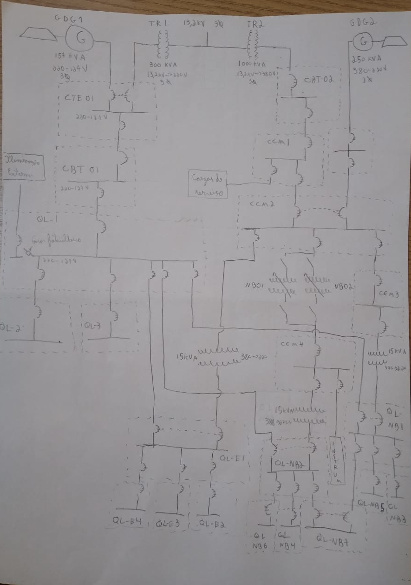

1 - Quais sistemas compõe o conjunto elétrico do Reator IPEN/MB-01?
Sistema de energia elétrica
Sistema de iluminação
Sistema de aterramento
Proteção contra descargas atmosféricas
^
2 - Descreva de forma detalhada as possíveis fontes de alimentação elétrica do Reator IPEN/MB-01.
Fontes externa de energia: 13.2Kv - 3Φ - 60Hz
GDG-01 157 kVa - 220/127V - 3Φ - 60hz
GDG-02 250 kVa - 380V - 3Φ - 60hz
^
3 - É recomendável que a potência instalada do Reator IPEN/MB-01 seja superior a 1300kVA? Justifique?.
Não, porque ultrapassa a potência dos geradores e dos transformadores.
^
4 - Que níveis de tensão a Cabine Primária F13 entrega à Sala de Eletrotécnica do Reator?
A cabine primária F13 é interligada a rede de distribuição subterrânea do IPEN em 13,2 kV, para recebimento de energia através de uma entrada subterrânea, possibilitando alimentar:
As cargas de processo do Prédio do Reator IPEN/MB-01 em 380/220V;
A iluminação do Prédio do Reator IPEN/MB-01, em 220/127V e;
As cargas dos serviços gerais e de iluminação dos prédios do CEN, em 220/127V
^
5 - Caso o disjuntor de média tensão da Cabine Primária de Transformação (F13) tenha sido avariado e esteja fora de operação, qual deve ser a fonte de alimentação do Reator IPEN/MB-01? Justifique sua resposta.
GDG-02, pois ele é capaz de alimentar o CCM2 diretamente.
^
6 - Quais as possíveis fontes de alimentação diesel dos GDG-01 e GDG-02 e quais as capacidades desses reservatórios?
Tanque diário de 500 litros e Tanque de armazenagem principal com 5000 litros ^
7 - Onde estão instalados os CCM do Reator IPEN/MB-01?
Na sala de eletrotécnica
^
8 - Sobre subsistemas:
a) Qual a diferença entre os Subsistemas de Energia Elétrica Essencial e de Serviço?
Essencial são religadas pelo gerador e o de serviço são alimentados por fonte externa não sendo alimentadas em caso de falta de energia da rede externa.
^
b) O Subsistema de Energia Elétrica Essencial possui algum equipamento classe 1E? Caso sim, cite um exemplo.
Não, é essencial mas não é 1E
^
9 - O CCM-1 é considerado essencial?Esse CCM é alimentado em que nível de tensão e por qual CBT? Justifique suas respostas
CCM1 não é essencial porque possui somente cargas de serviço. CBT-02 e 380V por que não tem cargas essenciais e é alimentado pela fonte externa.
^
10 - Faça um diagrama unifilar simplificado de todo o sistema

^
11 - Cite duas carga alimentadas CCM-3
QL-NB1 (Quadro de Luz).
SC-101 Self Containned no Edifício Auxiliar.
EX-103 A Ventilador da Sala de Baterias (só A).
EX-201 A Ventilador de Recirculação de Ar da Célula Crítica (S1).
EX-102 A Ventilador de Exaustão de Ar da Célula Crítica (S1).
TC 111 A Aquecedor de Proteção dos Filtros Absolutos.
TC 111 B Aquecedor de Proteção dos Filtros Absolutos
^
12 - Qual é o possível motivo da instrumentação do Reator IPEN/MB-01 ser alimentada pelo CCM-4?
A instrumentação nuclear precisa de estabilizadores de tensão para garantir seu funcionamento ideal. Somente o CCM4 possui estabilizadores antes da sua alimentação.
^
13 - Quais as alternativas de acionamento do GDG-02?
Partida e parada automática, manual e revezando
^
14 - Qual a potência do GDG-02 e qual é o nível de tensão fornecido por esse gerador?
250kva e 380V trifásico
^
15 - Quais quadros do Sistema de Iluminação estão localizados na Sala de Eletrotécnica.
QL-E1
QL-1
QL-NB1
QL-NB2
QL-NB7
^
16 - Sobre o QL-1 responda:
a) Que cubículo alimenta o QL-1?
CBT-01
^
b) Quais quadros de serviço (não essenciais) podem ser alimentados pelo QL-1?
QL2
QL3
Ilum. Externa
^
17 - Quais as possíveis fonte de alimentação dos quadros QL-E1, QL-NB1 e QL-NB2? Como é realizada a transferência entre suas fontes?
O QL1 pode ser alimentado pelo CCM2,
O QL-NB01 pode ser alimentado pelo CCM3 ou QL-E1
O QL-NB02 pode ser alimentado pelo CCM4 ou QL-E1
^
18 - Quais quadros de iluminação estão localizados na Célula Crítica? Esses quadros são de serviço?
QL-E3
QL-NB5
QL-NB6
São todos quadros essenciais
^
19 - Qual a autonomia das luminárias de emergência?
8 horas
^
20 - Por qual razão os CCM-2, 3 e 4 possuem transformadores abaixadores?
Pra ser compatível com o sistema de iluminação
^
21 - Quais as possíveis formas de alimentação do quadro QL-NB7? Em qual compartimento do Reator IPEN/MB-01 esse quadro está localizado?
Pelo QL-NB01 ou QL-NB02, fica na sala de eletrotécnica.
^
22 - Quais as malhas de aterramento existentes no Reator IPEN/MB-01? Essas malhas são
interligadas?
Malha de Força
Malha de Instrumentação
Malha de Telefonia
Malha de Descargas atmosféricas
Todas interligadas, exceto a de telefonia.
^
23 - Onde estão interligados e centralizados os aterramentos dos equipamentos eletrônicos e de instrumentação do Reator IPEN/MB-01
CCM4.
^
24 - O tipo de aterramento utilizado para o Sistema de Energia Elétrica é o mesmo para o Sistema de iluminação? Explique
Não!
Um é do tipo TT e outro do tipo NS.
O TT é mais eficiente, porém é mais caro. Por isso não são ambos do tipo TT.
^
25 - Qual a função e onde estão instalados os varistores no Reator IPEN/MB-01?
A função é impedir a propagação de sobretensão e estão no QL-1 QLB1 e QLB2, sala de eletrotécnica.
^
26 - Quantos são,qual o tipo e onde estão instalados os captores do SPDA do IPEN/MB-01?
1 na chaminé e 3 no topo da célula crítica. ao total são 4 captores tipo franklin.
^